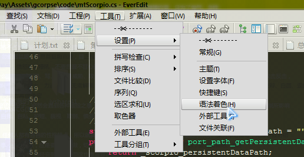
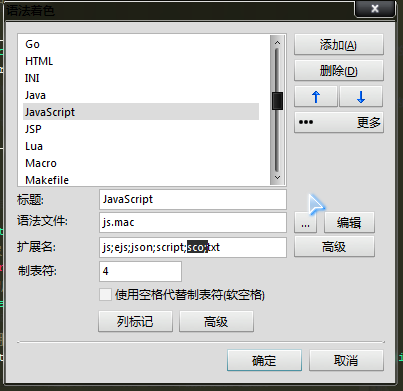
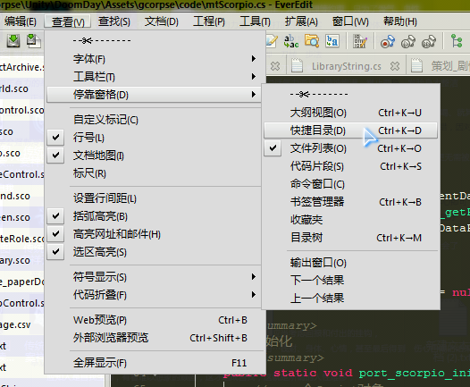
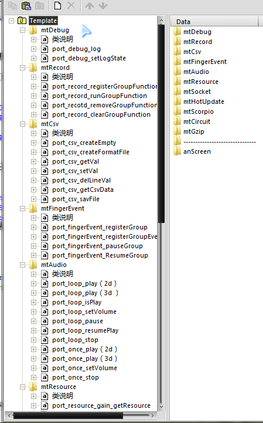
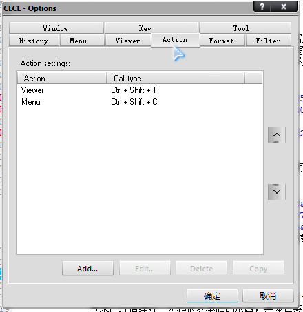
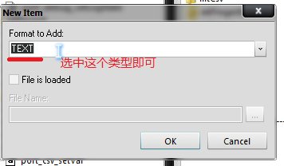

<!doctype html>
<html>
<head>
<meta charset="utf-8">
<title>gcorpse - scorpio使用总结</title>
<style type="text/css">
div h1 {
	font-size: 13px;
*	color: #EB902A;
	font-weight: normal;
}
div h2 {
	font-size: 12px;
	font-weight: normal;
}
div h3 {
	font-size: 13px;
	color: red;
	font-weight: normal;
}
div h4 {
	font-size: 12px;
	color: #626262;
}
div h5{
	font-size: 12px;
	color: #FB6365;
}
hr{
	color: #E5E5E5;
}
div{
	font-size:12px;
	text-indent: 24px;
}
pre{
	font-size:12px;
	text-indent: 65px;
	font-weight:normal;
	color:#5E5E5E;
}
a{
	font-size: 12px;
	color: #E59353;
}
a:link{
	font-size: 12px;
	color: #5680AC;
}
a:hover{
	color: #5680AC;
}

</style>
</head>
<body>

	<div>
		<h3>gcorpse制作，如果以后有更新都是以日期作为版本号的</h3>
		<h3>脚本语言的gitHub上的网址是 https://github.com/qingfeng346/Scorpio-CSharp</h3>
		<h3>gcorpse@163.com，这是我邮箱，很少使用</h3>
		<p></p>
	</div>
	
    <hr>

	<div>
		<h5>你看的这总结，是假设在你懂得最基本的语言知识：变量、函数、逻辑判断　的基础上</h5>
		
		<h5>scorpio脚本类似JaveScript语言，scorpio官方gitHub上也有demo，可以让你了解到语言的少量的基本知识</h5>
		<h5>scorpio和lua对比有什么优势？更加简单易学，以我为例，lua我是学了一个星期才能入门，而这个脚本语言则是几个小时</h5>
		
		<h5>如果看了之后还是有问题或漏了什么错了什么，进 QQ群245199668（scorpio群）　找　脚本语言的作者　或　我或其他人问</h5>
		
		<h1>导航</h1>
		<ul>
			<h2><a href="#">scorpio环境搭建 和 使用</a></h2>
		    	<h2>&nbsp;&nbsp;&nbsp;&nbsp;><a href="#安装脚本">安装脚本</a></h2>
		    	<h2>&nbsp;&nbsp;&nbsp;&nbsp;><a href="#脚本的封装">脚本的封装</a></h2>
		    	<h2>&nbsp;&nbsp;&nbsp;&nbsp;><a href="#辅助的编写工具">辅助的编写工具</a></h2>
		    	
	    	<h2><a href="#">脚本 的 基础</a></h2>
		    	<h2>&nbsp;&nbsp;&nbsp;&nbsp;><a href="#基本数据类型">基本数据类型</a></h2>
		    	<h2>&nbsp;&nbsp;&nbsp;&nbsp;><a href="#逻辑符　和　运算符">逻辑符　和　运算符</a></h2>
		    	<h2>&nbsp;&nbsp;&nbsp;&nbsp;><a href="#逻辑 异常">逻辑 异常</a></h2>
		    	<h2>&nbsp;&nbsp;&nbsp;&nbsp;><a href="#函数">函数</a></h2>
		    	<h2>&nbsp;&nbsp;&nbsp;&nbsp;><a href="#表">表 和 表 初始化的this问题</a></h2>
		    	<h2>&nbsp;&nbsp;&nbsp;&nbsp;><a href="#注释">注释</a></h2>
		    	<h2>&nbsp;&nbsp;&nbsp;&nbsp;><a href="#分号">分号</a></h2>
		    	<h2>&nbsp;&nbsp;&nbsp;&nbsp;><a href="#表、变量、函数、其作用域">表、变量、函数、其作用域  和 全局临时变量的定义 和 this注意问题</a></h2>
		    	<h2>&nbsp;&nbsp;&nbsp;&nbsp;><a href="#更清晰的变量作用域">更清晰的变量作用域 和 this注意问题</a></h2>
		    	<h2>&nbsp;&nbsp;&nbsp;&nbsp;><a href="#宏定义">宏定义</a></h2>
	    		<h2>&nbsp;&nbsp;&nbsp;&nbsp;><a href="#c#数组 和 脚本里的数组 的 不同，不要混淆">c#数组 和 脚本里的数组 的 不同，不要混淆</a></h2>
	    		
	    	<h2><a href="#脚本 的 扩展库">脚本 的 扩展库</a></h2>
		    	<h2>&nbsp;&nbsp;&nbsp;&nbsp;><a href="#函数库">函数库</a></h2>
		    	<h2>&nbsp;&nbsp;&nbsp;&nbsp;><a href="#json库">json库</a></h2>
		    	<h2>&nbsp;&nbsp;&nbsp;&nbsp;><a href="#array库">array库</a></h2>
		    	<h2>&nbsp;&nbsp;&nbsp;&nbsp;><a href="#table表库">table表库</a></h2>
		    	<h2>&nbsp;&nbsp;&nbsp;&nbsp;><a href="#math库">math库</a></h2>
		    	<h2>&nbsp;&nbsp;&nbsp;&nbsp;><a href="#string库">string库</a></h2>
		    	
	    	<h2><a href="#脚本 的 全局函数">脚本 的 全局函数</a></h2>
		    	<h2>&nbsp;&nbsp;&nbsp;&nbsp;><a href="#获取 类型">获取 类型</a></h2>
		    	<h2>&nbsp;&nbsp;&nbsp;&nbsp;><a href="#转换 变量 的 值类型">转换 变量 的 值类型</a></h2>
		    	<h2>&nbsp;&nbsp;&nbsp;&nbsp;><a href="#获取 变量 的 值类型">获取 变量 的 值类型</a></h2>
		    	
	    	<h2><a href="#c#的 容器">c#的 容器，为了性能不推荐使用，推荐用表代替</a></h2>
		    	<h2>&nbsp;&nbsp;&nbsp;&nbsp;><a href="#List">List列表</a></h2>
		    	<h2>&nbsp;&nbsp;&nbsp;&nbsp;><a href="#Dictionary">Dictionary字典</a></h2>
		    	<h2>&nbsp;&nbsp;&nbsp;&nbsp;><a href="#Queue">Queue先入先出</a></h2>
    	
	    	<h2><a href="#脚本 和 c# 的交互">脚本 和 c# 的交互</a></h2>
		    	<h2>&nbsp;&nbsp;&nbsp;&nbsp;><a href="#脚本里 导入 c# 泛型方法">脚本里 导入 c# 泛型方法</a></h2>
		    	<h2>&nbsp;&nbsp;&nbsp;&nbsp;><a href="#c#里的 模板类的 实例 被 脚本使用">c#里的 模板类的 实例 被 脚本使用</a></h2>
		    	<h2>&nbsp;&nbsp;&nbsp;&nbsp;><a href="#c#里的 模板类 被 脚本使用">c#里的 模板类 被 脚本使用</a></h2>
		    	<h2>&nbsp;&nbsp;&nbsp;&nbsp;><a href="#脚本里的 数组 作为参数 传递 给 c# 的方法 使用的 注意之处">脚本里的 数组 作为参数 传递 给 c# 的方法 使用的 注意之处</a></h2>
		    	<h2>&nbsp;&nbsp;&nbsp;&nbsp;><a href="#脚本里的 方法 作为参数 传递 给 c# 的方法 使用的 注意之处">脚本里的 方法 作为参数 传递 给 c# 的方法 使用的 注意之处</a></h2>
		    	<h2>&nbsp;&nbsp;&nbsp;&nbsp;><a href="#脚本里的 表 作为参数 传递 给 c# 的方法 使用的 注意之处">脚本里的 表 作为参数 传递 给 c# 的方法 使用的 注意之处</a></h2>
		    	<h2>&nbsp;&nbsp;&nbsp;&nbsp;><a href="#c#获取到 脚本里的 表、脚本数组、方法、基础数据、各种内容，可以进行的 方法就调用执行 数据就处理 的 详细">c#获取到 脚本里的 表、脚本数组、方法、基础数据、各种内容，可以进行的 方法就调用执行 数据就处理 的 详细</a></h2>
		    	<h2>&nbsp;&nbsp;&nbsp;&nbsp;><a href="#脚本函数、参数、值　和　c#函数、参数、值是可以互通的">脚本函数、参数、值　和　c#函数、参数、值是可以互通的</a></h2>
		    	<h2>&nbsp;&nbsp;&nbsp;&nbsp;><a href="#c#委托和脚本function类型无缝切换">c#委托和脚本function类型无缝切换</a></h2>
		    	<h2>&nbsp;&nbsp;&nbsp;&nbsp;><a href="#函数支持c#的默认参数">函数支持c#的默认参数</a></h2>
		    	<h2>&nbsp;&nbsp;&nbsp;&nbsp;><a href="#脚本函数和c#交互时候，参数是不会自动转换的，参数的类型要完全符合，不然会报错">脚本函数和c#交互时候，参数是不会自动转换的，参数的类型要完全符合，不然会报错</a></h2>
		    	<h2>&nbsp;&nbsp;&nbsp;&nbsp;><a href="#直接在c#操作脚本的内容,不推荐使用">直接在c#操作脚本的内容,不推荐使用</a></h2>
	    	
	    	<h2><a href="#如何使用脚本的最佳和性能">如何使用脚本的最佳和性能</a></h2>
		    	<h3>&nbsp;&nbsp;&nbsp;&nbsp;><a href="#调用c#类的方法　和　调用　表的方法的　性能测试">调用c#类的方法　和　调用　表的方法的　性能测试</a></h2>
		    	<h3>&nbsp;&nbsp;&nbsp;&nbsp;><a href="#c#容器　和　表的同样容器　的　性能 比较">c#容器　和　表的同样容器　的　性能 比较</a></h2>
		    	<h3>&nbsp;&nbsp;&nbsp;&nbsp;><a href="#脚本里的容器　和　表　的　性能比较">脚本里的容器　和　表　的　性能比较</a></h2>

	    	<h2><a href="#多国语言的使用 和 建议 和 优势">变量 和 方法名 可以 多国语言的使用 和 建议 和 优势</a></h2>
	    	
        </ul>

		<h5>更新以下内容</h5>
		<h5>&nbsp;&nbsp;&nbsp;&nbsp;宏定义</h5>
		<h5>&nbsp;&nbsp;&nbsp;&nbsp;this作用域和初始化 的 更好被看到</h5>
		<h5>&nbsp;&nbsp;&nbsp;&nbsp;最新脚本增加的功能，有关 表的初始化 的内容增加</h5>
		<h5>&nbsp;&nbsp;&nbsp;&nbsp;连图像一起打包成压缩包文件以避免看不到图像</h5>
		<h5>&nbsp;&nbsp;&nbsp;&nbsp;导航的脚本封装里的内容</h5>
		<h5>&nbsp;&nbsp;&nbsp;&nbsp;c#获取脚本内容元素的略详细处理</h5>
		<h5>&nbsp;&nbsp;&nbsp;&nbsp;更新全局临时变量的一些说明</h5>
	
        
    </div>

    <hr>
    
	<div>
    	<pre>


<h4 id="scorpio的环境搭建和使用">scorpio的环境搭建和使用</h4>


		<h5 id="安装脚本">安装脚本</h5>
			本文假设你是 使用 ScorpioFrame客户端框架的,里面已经做好了整合，不需要你搭建
				注意的是，我改变了 框架里的脚本 的一些内容，所以框架使用的脚本不是最新版的 
				
			要是没有使用，你需要到 官网 https://github.com/qingfeng346/Scorpio-CSharp 下载最新的 scorpio语言，按照说明把它放进unity项目里以使用


		<h5 id="脚本的封装">脚本的封装</h5>
			使用前，你需要封装的，
			写一个c#类，把脚本装起来以简化使用，例如以下 框架里的 mtScorpio类的缩减 版本

				using UnityEngine;
				using System.Collections;

				using Scorpio;

					//定义一个测试注册的类
					namespace gcorpse{
						public class mtCsv{
							public 	static void a( string t ){};
							private static void b( string t ){};
							public static void port_csv_getVal( int a , int b );
							...
						}
					}


					
				
					public class mtScorpio{

						static Script _scorpio_script = null;

						/// <summary>
						/// 一开始就要执行的初始化
						/// </summary>
						public static void port_scorpio_init(){
							//只需要初始化一次
							if( _scorpio_script == null ){
								//new一个Script对象，只需要new一次就够了
								_scorpio_script = new Script();       
								//加载所有Scorpio的库，源码在Library目录下
								_scorpio_script.LoadLibrary();                               
							}
						}

						/// <summary>
						/// 绑定 某 c# 类的 实例进 脚本里，以可以 脚本里使用，可以使用 静态和非静态的方法，但注意的是，方法如果有默认值参数，则该参数就必须要写全的，不然找不到，因为脚本的方法参数是不允许有默认值
						/// </summary>
						/// <para>
						///	例如，c#里：mtScorpio.port_scorpio_employCSharpClass( "mtCsv" , new gcorpse.mtCsv() );
						/// 在脚本里这样使用 mtCsv.port_csv_getVal( ... );
						/// </para>
						/// <param name="className">要在脚本里命名成的 类名称，例如 "mtCsv"</param>
						/// <param name="classBeau">传递进的对象，注意 该对象必须new生成对象</param>
						public static void port_scorpio_employCSharpClassInstance( string className, object classBeau ){
							//SetObject可以设置一个c#对象到脚本
							_scorpio_script.SetObject( className, _scorpio_script.CreateObject( classBeau ) );  
						}


						/// <summary>
						/// 执行一段 可能有返回值 的 脚本的代码
						/// </summary>
						/// <param name="value">脚本格式的字符串，如果有返回值，也可以获取得到的
						/// <para>例如值为，"var t = function(a){return a;};return t( '返回值' );"</para>
						/// <para>例如值为，"return function t(){ return '返回值'};//这样就能获取到 脚本的函数，然后进行使用，具体的对于 获取到的 脚本内容的 更多使用，看 最上面的导航 'c#获取到 脚本里的 表、脚本数组、方法、基础数据、各种内容，可以进行的 方法就调用执行 数据就处理 的 详细"</para></param>
						public static ScriptObject port_scorpio_evalString( string value ){
							//如果有返回值就返回它
							return _scorpio_script.LoadString( value );
						}

						/// <summary>
						/// 压入 一个c# 类（非实例） 进 脚本里，并在脚本里注册它，
						/// <para>注意，这些注册了的类可以在脚本里直接调用静态方法、属性的，但是对于非静态的，调用不了</para>
						/// <para>例如这样使用，c#里：mtScorpio.port_scorpio_emploryCSharpClass( "mtCsv"	, "gcorpse.mtCsv" , typeof( gcorpse.mtCsv ).Assembly );</para>
						/// </summary>
						/// <param name="scriptValueName">如果不用在脚本里注册它，就值为""</param>
						/// <param name="classObj">类，这样使用，假设要压入GameObject，则填入：typeof( GameObject ).Assembly </param>
						public static void port_scorpio_emploryCSharpClass( string scriptValueName , string scriptAssemblyName , System.Reflection.Assembly classObj ){
							//它是这样压入 类的（程序集）
							_scorpio_script.PushAssembly( classObj );
							
							if( scriptValueName != "" ){
								//在脚本里注册全局的
								port_scorpio_evalString( scriptValueName + " = import_type( \"" + scriptAssemblyName + "\" )" );
							}
						}


						/// <summary>
						/// 执行 某路径 下的文件，该文件可能有返回值，（这是经过缩减以能让你看明白的，所以没有添加路径）
						/// </summary>
						/// <param name="filePath">全路径+名称，例如为编辑器下的资源目录的某处的文件，文件的扩展名随意，因为是获取里面的字符串的： Application.dataPath + "/gcorpse/readyResources/script/6.c"</param>
						public static ScriptObject port_scorpio_evalFile( string filePath ){
							//如果有返回值就返回它
							return _scorpio_script.LoadFile( filePath );
						}

					}


			


		<h5 id="辅助的编写工具">辅助的编写工具</h5>
			scorpio脚本语言的作者还没有出对应的辅助编写工具　进行　代码补全、着色高亮、纠错、断点
			所以我推荐的是采用 everEdit　的　js进行编写，
				下载你需要的 everEdit　版本，例如最新的版本
					然后设置这两项
						让js的 语法着色 启动
							</img>
							</img>
						让文件能编写找到
							</img>
							
							
			而　代码补全，建议是不要试图修改 everEdit的代码补全，我试过，最后发现还是采用 复制粘贴工具CLCL省事，这样方便
			因为它是免费的，所以框架包　里有该工具，它已经定义了全局键位
			启动它后，使用键盘 ctrl + shift + T  和　　ctrl + shift + C　可以打开主面板和粘贴，里面已经配置好框架提供的功能类们
			
				<a target="_blank" href="http://www.baidu.com/s?ie=utf-8&f=8&rsv_bp=1&ch=6&tn=myie2dg&wd=CLCL%E3%80%80%E5%A4%8D%E5%88%B6%E7%B2%98%E8%B4%B4&oq=I%26lt%3BI%26lt%3B%E3%80%80%E5%A4%8D%E5%88%B6%E7%B2%98%E8%B4%B4&rsv_pq=c73ae39e0000559e&rsv_t=001f6YTJzr6BGhAmGMeZekwirzm4C5s%2FY3Fz%2Btyg5IzEo9VNv69o34KBgNSs%2Bg&rqlang=cn&rsv_enter=1&rsv_sug3=5&rsv_sug1=1&rsv_sug7=000&rsv_sug2=0&inputT=2644&rsv_sug4=3521&rsv_sug=1">这是百度直接搜索的链接</a>
				
				你可以设置快捷键、定义内容，使用它，
				记得导出你建立的数据，如果它出了问题，例如　数据丢失，你可以　导入　找回来
				
				</img>
				</img>
				</img>
				</img>
		


<h4 id="脚本 的 基础">脚本 的 基础</h4>
		//是用c c++ c#适应的角度的，对于一些造成干扰语法没有收录


		<h5 id="基本数据类型">基本数据类型</h5>
			//基础的运算数据类型
				//其他的类型，基本什么都支持的
					//例如 c#的自定义的类、类型的，只要注册进脚本里，都可以使用
					var t = KP.xx();//KP是c#里的自定义类，具体的注册使用，看 最上面的导航 "脚本封装"
					...
				//空的变量
					var t1 = null; //这种变量就是空的，还没有内容的
				//字符串
					//申请一个string 单引号和双引号都可以使用 双引号内可以直接使用单引号 反之同理
					//字符串前面加@申请一段不转义字符串 用法参考c#的@字符串
					var str1 = "123‘123"
					var str2 = '123"123'
					var str3 = @"1111
								333333
								4444444"
					var str4 = @'1111
								2222222
								333333
								4444444'
				//number数字里的一员，double多精度浮点数，平时基本都是用它的
					var t2 = 65.0;
					var t3 = 65;//因为脚本的变量默认是采用double的，所以这也是double类型的

				//number数字里的一员，long型，可以使用16进制的（为了代码的简明可维护，不推荐16进制）
					var t4 = 65L;
					var t5 = 0xFF		
					
				//number数字里的一员，Int32？的，注意的是，必须明确的转换其的才会被当成int使用
					var t8 = toint( 65 );//明确转换成int才会被当成int32使用，否则只会当成double类型
					
				//bool布尔类型
					var t6 = false;//假
					var t7 = true;//真
					
				//function函数类型
					var t8 =  function(){};
					t8();//可以进行调用函数
					
				//table表类型
					var t9 = {};
				
				//array数组类型
					var t10 = [];
				
				//enum不明
				****				
				//userdata不明				
				****
					
				
		<h5 id="逻辑符　和　运算符">逻辑符　和　运算符</h5>
			//基本就和c++ c c# js等一个样子
			
			//数字比较 > >= < <=
				t3 == 65 //比较的结果为true
				t2 == 65 //比较结果还是true，因为默认是使用double的，这行代码就等于是 t2 == 65.0
				t2 != 65 //比较的结果为false
			//所有数字运算支持 + - * / %
				t2 + 100 //返回的结果为165
				str1 + "甲磺酸" //返回的结果为"123‘123甲磺酸"
			//long类型支持位运算 | & ^ << >>
			//为了代码的简明可维护，不推荐使用位运算符
				t4 | 2 
				t5 >> 1 //位移
			//字符串比较 支持 == != > >= < <=
				str1 == str2 ;//2个字符串是否相等
				str1 > str2 ;//字符串这样比较没什么意义
			//任何值跟字符串相加都会保存成string
				str1 + 500 ;//结果是 "123‘123500"
				
			

		<h5 id="逻辑 异常">逻辑 异常</h5>
			//判断
				//判断t2不等于100是不是真的，真的就执行内容1，假的就执行内容2
				if( t2 != 100) {
					//内容1
				//假的情况下执行的内容
				}else{
					//内容2
				}
				//可以不带else
				if( t2 != 100 ){
				}
			//另一种的判断不推荐使用

				
			//支持 && || 以及取反操作等的运算符
				if( t2 == 100 && t3 == 100 || !(str1 == "")) {
					"true"
				}
				//除了null和false  其他所有值判断都是true
				if( null || 100 || "" ) {
					"null"
				}

				
			//switch 条件分歧，目前 case 必须加break 否则会解析失败
				switch( t2 ){
				//如果t2值是1就执行里面的内容
				case 1:
					//内容
						
					//break是跳出的意思
					break;
				//如果t2值是2就执行里面的内容
				case 2:
					//内容...
					break;
				case "a":
					break;
				case "b":
					break;
				case c:
					return;
					break;//必须加入
				//如果t2的值上面都没有对应找到和进入执行内容，就执行这个的内容
				default:
					//内容
					break;
				}

			//基本for循环，其还有其他2种循环，但为了你以后能适用c# c++ c　和　代码维护，所以不推荐使用其他的
				for( var i = 0;i < 10; ++i ){
					//在里面执行内容
				}
			
			
			//异常
			//它能捕捉到c#抛出的异常 也能捕捉到 自己抛出的，例如脚本里调用c#的类操作，出错了，也可以捕获的
			//注意的是，异常捕获的消耗是在出了错捕捉到了　就生成第一次初始化的　异常上，在之后出错上不会消耗什么，所以值的使用
				try{
					if(arg) {
						//抛出一个异常
						throw th
					}
				//捕获到异常就执行里面的内容
				}catch(e){
					"error : " + th
				}


		<h5 id="函数">函数</h5>

			//普遍函数
			//function 函数的名称( 参数们 ){ 内容 }
			function text1( a ){
				//可以有的返回值，值类型随意，注意该返回值不能返回多值，但能返回 脚本数组之类的制造多值，
				//例如 return a = [6,7,8]; 	这样新建一个脚本数组 值返回的
				return "a";
			}

		
			//参数不需要填写类型
			function text1( a ){
				//函数内加入 固定变量，以让外部可访问，这是很不推荐的
				t = "xx";
			}

			
			//不固定参函数
			//a c d 都是普通参数来的
			//...b 是不固定参数，类型是 脚本数组，
			//注意 不固定参数 必须在最后定义，否则会出错，可以只定义不固定参数，不定义普通参数 例如 function text1( ...a ){}
			function text1( a , c , d , ...b ){
				//这是普通参数
				a + c + d;
				//遍历不固定参数 b ，它是脚本数组类型，脚本数组的具体使用，看最上面的导航 “array库”
				foreach( pair in pairs( b )){
					//该数组里的变量 是顺序的
					pair.value;
				}
			}
			
			
			//函数也可以给变量的
			var f = text1;
			f( 9 ); 

			
			//函数不可用多态的，只能有一条
				function x( a , b , c ){}
				function x(){};
				//这会导致执行不对正确的函数			
	
	
			//函数内可以嵌套函数等的
				function test(data) { 
					return function() {
						print(data)
					}
				}
				var b = test(100)
				b()
				test(200)
				b()		
	

	
			//函数可以在外部定义内部变量的值，但不推荐使用
				function test() { print(str) }
				test.str = "hello world"
				
				test = function() { print(str) }
				test.str = "hello world"
	


		<h5 id="表">表</h5>
			//临时的表，因为加了 var关键字		
			var base = {
				ise;//如果没有值则默认是null值,框架的旧脚本可能不支持默认null，所以应当直接赋值null
				//表里的属性变量不要用var局部变量
				value1 = 100;
				vau2 = '你是谁'
				4cscs = null
				function hello1(){
					//this是本层的意思，而本层是base表 
					print("hello1 " + this.value1 ) 
				}
				function hello2() { print("base hello2") }
			}

			//表的初始化 和 this 问题
				一开始是 逐句的解析 和构造 表，所以执行到this的时候，this还没赋予，所以一开始是没有this的，所以如果这样做是错误的
				var ta = {
					b = 6;
					//最新脚本已经增加了"后申请的变量使用前申请的变量，而不用this"的功能，所以最新脚本可以使用
					//而 框架用的版本没有增加，所以用框架的脚本会错误
					a = b + 5;
					//最新脚本已经增加了初始化时变量可以使用函数功能，不管该函数是在表里的哪里定义的都可以调用（函数里面的this也可以用了） 
					//但注意的是,函数里的this要是使用到了没有赋值的变量，例如使用到了还没赋值的 g，就会获取到null，导致隐形错误问题
					//而 框架用的版本没有增加，所以用框架的脚本会错误，
					k = d();//最新脚本赋予值是 "6null" ,框架里使用的旧版错误
					function d(){ return "6" + this.g };//g还没有初始化，所以是null
					g = 99;//逐句的解析到这里，g才初始化为99
				}

				//建议是写一个初始化方法，解析了表后，就执行它的初始化，这样就不必要纠结这些 初始化问题
				var ta = {
					a = null;
					k = null;
					function init(){
						this.a = 6;
						this.k = "6" + this.a;
					}
				}
				ta.init();
				

			//能通过[]去访问数字的变量，不推荐使用，推荐使用 脚本数组
			
			//能通过[]去访问变量名称, 但不推荐使用
			base[ "vau2" ];
			
			//对于不存在的元素，也可以访问的，值是null
			base[ "dc" ] == null;
			
			//可以增加新的成员赋值
			base[ 'fun' ] =  function(){};//函数
			base[ 'fun2' ] = {};//表

			//复制一份该表的内容，这样就存在2个base表了（这就等于是 c#里的new）
			var tm = clone( base );

			//a继承了 base 和 附加新的内容
			var a = base + {
				value2 = 200,
				function hello2() { print("a : hello2 " + this.value2) }
			}
			//b继承了 base 和 附加空的内容
			var b = base + {}
 
			a.value1 = 300
			a.hello1()      //输出 hello1 300
			a.hello2()      //输出 a : hello2 200 ，因为其的 新hello2覆盖了父的base的hello2
			b.hello1()      //输出 hello1 100
			b.hello2()      //输出 base hello2
 
			//用 + += 可以实现伪继承 相加的数据都是clone的,所以相互的数据不会共享，可以　实现抽象和继承，但不推荐脚本继承
			
			//完全复制一个table 里面的数据不会共享
			var base1 = clone(base)	
			var base2 = clone(base)
			base1.value1 = 300
			

			
			//可以将　表当成　关键字容器 使用，从性能角度，也推荐使用表去代表 c#的容器
				//空的表，用来作为 关键字 容器的
				c = {};
				//假设填进数据
				for( var i = 0; i < 10;  i ++ ){
					for( var k = 0; k < 10;  k ++ ){
						//要是没有这个变量数据，它会自动赋予的
						c[ i + "x" + k ] = i + "x" + k;
					}
				}
				" " + c[ 1000 ];//输出值是 null
				//遍历输出它们
				foreach( var xpair in vpairs( table.keys( c ) ) ){
					"> " + xpair;
				}
				
				


			//表像c#那样　只读遍历	
			//数组array也是这样遍历的
				var tab = {a = 100, b = 200, c = 300, d = 400}
				//获得表的数量，看 最上面的导航 "table表"
				table.count(tab)
				
				//可以获得索引+元素
				foreach ( var p in pairs(tab)) {
					print(p.key + " = " + p.value)
				}
				//可以直接获得表的元素
				foreach (var p in kpairs(tab)) {
					print(p)
				}
				//可以直接获得表的元素
				foreach (var p in vpairs(tab)) {
					print(p)
				}


		<h5 id="注释">注释</h5>
			//是注释当前行
			/*
				是注释多行内容
			*/
			
		<h5 id="分号">分号</h5>
			//分号;可写可不写
			var t1 = null;
			var t2 = null
		
		<h5 id="表、变量、函数、其作用域">表、变量、函数、其作用域...</h5>
			//声明一个临时的局部变量，没有初始化
			//这临时变量会随着该脚本文件、字符串的使用而消失的
			var a;
			//声明一个全局、静态的变量并顺便初始化其，全局、静态变量是永久存在到游戏结束的，定义执行了后脚本哪里都可以用到它
			b = 5;
			//这是全局、静态的表（前面没有加var），可作为　类使用
			tm = {
				//表的变量（可当成属性）必须是全局、静态的，如果是局部变量，会导致出现问题
				b = 9;
				//函数，定义在表里
				function f( t1 ){
					<strong>//b是最外层值为5的b，因为没有加上this本层的意思</strong>
					if( t1 > b ){
						//return 是函数用的，用于终止当前函数并返回变量值
						return t1;
					}else{
						<strong>//b是本层值为9的b，加上this后会被视为本层</strong>
						return this.b;
					}
				}
			}
			//可以在外部调用全局表
			var c1 = tm.f( 65 );//c1值是65			
			var c2 = tm.f( 1  );//c2值是9
			b;//最外部层的，因为本层是在最外的，所以它也就是值为5的本层
			this.b;//本层的，它值是5
			tm.b;//表tm里的
			
			
		<h5 id="更清晰的变量作用域">更清晰的变量作用域</h5>
			//脚本里
			gameObject = 9;//第一层的
			t = {
				gameObject =10;//第二层的
				function k1(){
					gameObject;//这是第一层的，这需要注意
					this.gameObject;//这是自己第二层的
					t.gameObject;//这是自己第二层的
				}
			}
			//也就是说，表里要使用自己的，就需要用 this，不然会被当成最外的	
			
			//this是指向当前的表的，但有一种情况，this是失效的
			xx = {
				//这是找不到this的,因为是将函数赋予变量，而这个函数上面没有东西
				x1 = function(){}
				//这能找到，因为x2上面是xx表
				function x2(){}
			}
		


		<h5 id="宏定义">宏定义</h5>

			//定义一个宏
			#define 要定义的宏名称
				例如： #define TEST

			//检测宏是否存在
				//判断 一个宏是否被定义了
				#if 宏名称
				#endif 

				//判断 一个宏是否被定义了
				#if 宏名称
				#elseif 宏名称
				#elseif 宏名称
				...
				#endif

			//宏语句可以嵌套，这是一个完整的定义例子

				#define TEST	//定义一个宏定义
				#if TEST
				    print("1")
				    #if TEST1
				        print("6")
						#define TEST_A	//定义一个宏定义
				    #endif
				    print("2")
				#elseif TEST2
				    print("3")
				    #if TEST
				        print("4")
				        #if TEST
				            print("6")
							#define TEST_B	//定义一个宏定义
				        #endif
				    #endif
				    print("5")
				#endif
				
				#if TEST_B
				#endif


		<h5 id="c#数组 和 脚本里的数组 的 不同，不要混淆">c#数组 和 脚本里的数组 的 不同，不要混淆</h5>
		
			//obj是一个GameObject物件
			//现在t获取Transform[]
			var t =  obj.GetComponentsInChildren( Transform );//获取该物件里的Transform群们，返回是 UnityEngine.Component[] 数组

			而这个t数组是 c#的数组 ，和 脚本里的数组 无关的，在c#里，这个例子的t数组有自己的使用方式，
			例如c#里它是这样使用的（脚本里也是一样的使用方式）
				t.GetValue( 0 );
				t.SetValue( null , 0 );
				t.Length;
				var g = t.Clone();
				
			而 脚本里的数组，它是这样使用的，和 c#的数组无关

				var tt = [45644 , 6 ];
				tt[ 0 ];
				//更多使用 看 最上面的导航 "array库"


		

		


<h4 id="脚本 的 扩展库">脚本 的 扩展库</h4>


		<h5 id="函数库">函数库，Scorpio/Library/LibraryFunc.cs	函数</h5>
			//脚本里使用

			//在函数里，有如下的方法可以获取当前函数的信息
				function x( a , b , c , d ){
				}
				//返回函数参数个数
				func.count( x );
				//返回函数是否是不定参函数
				func.isparams( x ) 
				//返回函数是否是静态函数(不是table内部函数)
				func.isstatic( x ) 
				//返回函数参数名字 的 脚本数组
				func.getparams( x ) 
	


		

		<h5 id="json库">json库，Scorpio/Library/LibraryJson.cs	json</h5>
			//推荐用表，不推荐使用 json
			
			//脚本里使用：
			
			//注意表的数据类型，表里面的变量不能是c#的容器，否则会出错，
			//	例如：DictionaryStringString = generic_type( import_type("System.Collections.Generic.Dictionary`2") , import_type("System.String") , import_type("System.String") );
				//临时的表
				var test = { 
					a = "100", b = b ; c = c ; d = d, e = 100, f = false 
					h = { t = [] };
					l = [];
					function m( a , b ,c ){
						foreach( pair in pairs( this ) ){
						    mtDebug.port_debug_log( pair.key + " = " + pair.value );
						}
						foreach( pair in pairs( this.h.t ) ){
						    mtDebug.port_debug_log( pair.key + " = " + pair.value );
						}
						foreach( pair in pairs( this.l ) ){
						    mtDebug.port_debug_log( pair.key + " = " + pair.value );
						}
					}
				};
				test.h.t[ 10 ] = "我";
				test.l[ 10 ] = "你";
				//表转为json
				var str = json.encode(test)
				print(str)
				//json的转为表
				var dec = json.decode(str)
				//读取 表里的所有内容
				test.m( 1 , 2 , 3 );


		<h5 id="array库">array库,位于 Scorpio/Library/LibraryArray.cs	脚本数组（非c#数组）</h5>
			//脚本里使用：
			
			//建立一个临时的空数组，该数组的元素支持任何的类型，包括但不限于　函数、变量、容器变量等等
			var tt = [];
			//添加　参数2　在　尾部
			array.add( tt , function(){ print("曾多次");return "ccc";} );//这是函数的，可以直接获取tt[0]();进行执行
			//可以直接取出数组里的元素使用
			tt[ 0 ]();//这是执行刚刚添加的元素1（函数）
			//如果访问范围超标，则会直接进行扩容
			tt[ 50 ] = "扩容";//会扩容到50，那些没有元素的位置们的值null
			//插入　参数3　在　参数2的位置
			//注意，array.insert　不自动拓展数量的，要是任意使用insert不检查长度会出错的，所以在使用insert前必须先检查长度以扩容以避免bug
				<strong>该自动扩展问题，已经自行修改源码实现自动扩展，所以不必要再顾忌这注意，但如果你使用的是自行下载的scorpio库，还是自己根据情况改不改吧</strong>
			//注意，如果插入自动扩展的地方没有值，则该位置是null
			array.insert( tt , 0 , "cscssc1" );//插入元素到第0位置，也就是它在最前面了
				//例如这样，检查它的数量如果长度超出就调整其
				//priority是要插入的位置
				//function t( arrayPos , priority , script ){
				//检查长度是否足够，不够就扩容
				//if( array.count( arrayPos ) < priority ){
				//	array.resize( arrayPos , priority  );
				//}
				//array.insert( arrayPos , priority ,  script );

				
			//移出　和　参数1相同的　1个 元素
			array.remove( tt , "cscssc" );
			//移除　参数1指定的位置　的　元素
			array.removeat( tt , 1 );
			//以参数2为可容纳元素的数量，去变动数组里的元素数量，
			//	要是　当前数组容量大于参数2，则会丢掉从头部数起超过的元素
			//	要是　当前数组容量小于参数1，则会在尾部添加null的元素以填充到符合参数1的长度，这些元素可以丢掉的
			array.resize( tt , 0 );//这效果就等于是 array.clear( tt )了
			//丢掉里面的所有元素	
			array.clear( tt );
			//获取里面的元素数量，1表示里面有1个元素，0表示里面没有元素
			array.count( tt );
			//排序，第2个参数是方法
			//它的使用就同c#里的Array.sort一样，只不过我没用过，所以不知道怎么用它
			array.sort( tt , function( a , b ){ return 1;} );
			//功能同indexof，最好还是少使用它为好
			//检测数组里是否存在　元素1，存在就返回true，否则返回false
			array.contains( tt , "cscssc");
			//从头部开始去寻找　参数2，找到就返回true，否则返回false
			array.indexof( tt , "cscss多吃点c");
			//从尾部开始去寻找　参数2，找到就返回true，否则返回false
			array.lastindexof( tt , "cscss多吃点c");
			//返回第1个元素，就同 tt[ 0 ] 一样
			array.first( tt );
			//返回最后的元素，就同 tt[ array.count( tt ) - 1 ] 一样
			array.last( tt );
			//不推荐使用，弹出（从容器里移出该元素和返回该元素）最后面的元素，如果没有存在该元素则会出错
			array.pop( tt );
			//不推荐使用，安全的弹出最后面的元素，没有存在该元素就返回null而不会出错
			array.safepop( tt );
			//弹出（从容器里移出该元素和返回该元素）最前面的元素，如果没有存在该元素则会出错
			array.popfirst( tt );
			//弹出（从容器里移出该元素和返回该元素）最前面的元素，没有存在该元素就返回null而不会出错
			array.safepopfirst( tt );
			//弹出（从容器里移出该元素和返回该元素）最后面的元素，如果没有存在该元素则会出错
			array.poplast( tt );
			//弹出（从容器里移出该元素和返回该元素）最后面的元素，没有存在该元素就返回null而不会出错
			array.safepoplast( tt );	

			//遍历的方式1
			//使用　vpairs，不需要.value
			foreach( var xpair in vpairs( tt ) ){
			    print( "> " + xpair );
			}
			//遍历的方式2
			//使用　pairs，需要.value
			foreach( var xpair in pairs( tt ) ){
			    print( "> " + xpair.value );
			}


		<h5 id="table表库">table表库，Scorpio/Library/LibraryTable.cs	表</h5>
			//脚本里使用：
			
		
			var c = { a = 5; c = 6; t = 7; function cc(){} };
			//能获取含有所有的元素的名称的array数组，
			table.keys( c );
				//检索该数组的方式1
				//foreach( var xpair in pairs( table.keys( c ) ) ){
				//    print( "> " + xpair.value );//依次输出是： a  c  t  cc
				//}
				//检索该数组的方式2
				//foreach( var xpair in vpairs( table.keys( c ) ) ){
				//    print( "> " + xpair );//依次输出是： a  c  t  cc
				//}
			
			//能获取含有所有的元素的值的array数组
			table.values( c );
				//检索该数组的方式1
				//foreach( var xpair in pairs( table.keys( c ) ) ){
				//    print( "> " + xpair.value );//依次输出是： 5  6  7  Function(xpair)
				//}
				//检索该数组的方式2
				//foreach( var xpair in vpairs( table.keys( c ) ) ){
				//    print( "> " + xpair );//依次输出是： 5  6  7  Function(xpair)
				//}
				//检索该数组的方式3
				//foreach (var p in kpairs( table.keys( c ) )){
				//	print(p)
				//}
			//返回表里面所有元素（包括函数、变量）加起来的数量
			table.count( c );//当前是4个元素
			//清理表里面的所有元素成空表
			table.clear( c );
			//移除表里面的　参数2名称的元素，要是没该变量，也不会报错
			table.remove( c , "cc" );//会移除函数cc，变量也是直接写上名称的，例如变量t则是 "t"
			//查找表里是否存在　参数2的元素，在就返回true，否则返回false
			table.containskey( c , "cc" );
		


		<h5 id="math库">//math库，Scorpio/Library/LibraryMath.cs	科学</h5>
			//脚本里使用：
			
			//该库里的内容 以后再进行更新
			Table.SetValue("PI", script.CreateDouble(PI));
			Table.SetValue("Deg2Rad", script.CreateDouble(Deg2Rad));
			Table.SetValue("Rad2Deg", script.CreateDouble(Rad2Deg));
			Table.SetValue("Epsilon", script.CreateDouble(Epsilon));
			Table.SetValue("min", script.CreateFunction(new min()));
			Table.SetValue("max", script.CreateFunction(new max()));
			Table.SetValue("abs", script.CreateFunction(new abs()));
			Table.SetValue("floor", script.CreateFunction(new floor()));
			Table.SetValue("clamp", script.CreateFunction(new clamp()));
			Table.SetValue("sqrt", script.CreateFunction(new sqrt()));
			Table.SetValue("pow", script.CreateFunction(new pow()));

		
			

		<h5 id="string库">string库，Scorpio/Library/LibraryString.cs	字符串</h5>
			//脚本里使用：
			
			//提取参数填入顺序的位置，从参数2开始包括参数2都是辅助要填入的参数，如果{}不够参数们多则忽略多余的参数
			string.format( "a{}b{}c{}d{}eeee", 5,6,7,8,9 );//返回值是"a5b6c7d8eeee"
			//返回指定范围内的字符串，
			//第2个参数是从　0开始的，例如例子里，0对应的是"问"字，1对应是３字
			//第3个参数是从　第2个参数开始数起来的　数量
			string.substring( "问３存档完的2" , 0 , 3 );//返回的是　“问３存”
			//剔除最前面　?个数量的字符（所有的字符包括汉字，1就是一个完整的）然后返回
			string.substring( "2彻底我的2" , 4     );//返回的是"的2" 				
			//返回字符串的长度
			string.length( "充电电池x1" );//返回6
			//将大写字母全部转成小写的
			string.tolower( "充电电CSndc池" );//返回是 "充电电csndc池"
			//将大写字母全部转成大写的
			string.toupper( "充电电CSndc池" );//返回是 "充电电CSNDC池"
			//剔除字符串左右的空格、缩进符(键盘上的TAB键)
			string.trim( "  s底层  x   ");//返回值是"s底层  x"
			//将所有符合的字符串内容换成新的然后返回，该方法不会改变原先参与操作的字符串们
			//参数2是要找到的字符串
			//参数3是将找到的字符串替换成的新资费从
			string.replace( "充电电CSndc池", "CSndc" , "啊s");//返回的是 "充电电啊s池"
			//字符串是不是空的或没有内容的，是就返回true，否则返回false
			string.isnullorempty( "ccc" );
			//从最前面（0表示第1个字符）字符开始，寻找参数2的字符串，如果找到，返回该字符的位置，没有找到就返回-1
			string.indexof( "到成都局ｉ吃" , "ｉ" );//返回的是4
			//从参数3指定位置的（0表示第1个字符）字符开始（含该位置的字符），寻找参数2的字符串，
			//    找到就返回找到的首位置，找不到就返回-1
			string.indexof( "到成都局ｉ吃吃点好的" , "ｉ" , 5);//第5个也就是吃开始的向后找，所以找不到，返回的是-1
			//从最后面（0表示最后面的字符）字符开始，寻找参数2的字符串，如果找到，返回该字符的位置，没有找到就返回-1
			string.lastindexof( "到成都局ｉ吃" , "ｉ" );//返回的是4
			//从参数3指定位置的（0表示最后面的字符）字符开始（含该位置的字符），寻找参数2的字符串，
			//    找到就返回找到的首位置，找不到就返回-1
			string.lastindexof( "到成都局ｉ吃吃点好的" , "ｉ" , 5);//第5个也就是吃开始的向后找，所以找不到，返回的是-1
			//判断参数2是否在字符串1的开头，是就返回true，否则返回false
			string.startswith( "多吃豆腐的cc" , "多吃" );//返回的是true
			//判断参数2是否在字符串1的末尾，是就返回true，否则返回false
			string.startswith( "多吃豆腐的cc" , "的cc" );//返回的是true
			//功能同 string.indexof
			//寻找参数2字符串是否在参数1字符串里，是返回true，否则返回false
			string.contains( "的房间诶的附加费" , "的" );//返回值是true
			//分隔提取出数据们成表，参数2是要分隔的字符
			string.split( "的c房间c诶c的c附c加cc费c" , "c" );
				//这是例子，会从　0开始检索出所有的值
				//foreach( var xpair in pairs( string.split( "的c房间c诶c的c附c加cc费c" , "c" ) ) ){
				//    print( "> " + xpair.value )
				//}
				//下面的例子，使用的是 vpairs，所以不需要写.value就可以取值
				//foreach( var xpair in vpairs( string.split( "的c房间c诶c的c附c加cc费c" , "c" ) ) ){
				//    print( "> " + xpair )
				//}


<h4 id="脚本 的 全局函数">脚本 的 全局函数</h4>


		<h5 id="获取 类型">获取 类型</h5>
			脚本里使用:

			typeof( c#里的东西 ) 只能获取 c#的东西，对于 脚本里的 表/数组/变量等使用它是会出错误的
				例如脚本里写
					var t = GameObject( "测试" );
					typeof( t );//是 GameObject 类型
					var e = 65;
					typeof( e );//错误 


			type( 目标 ) 可以获取 脚本里的 表 数组 变量 方法 等的东西的类型，对于 c# 的东西也能获取，但只能知道c#的东西是 c#类的

				例如脚本里写
					//获取脚本的
					var t1 = [];
					var t2 = {};
					var t3 = function(){};
					type( t1 );//是5
					type( t2 );//是6
					type( t3 );//是4
					//可以获取c#的
					type( new GameObject() );//是8

					这是返回的数字 代表的意思
				        0 意思是 Null,           //Null
				        1 意思是 Boolean,        //布尔
				        2 意思是 Number,         //数字
				        3 意思是 String,         //字符串，函数
				        4 意思是 Function,       //函数
				        5 意思是 Array,          //数组
				        6 意思是 Table,          //MAP
				        7 意思是 Enum,           //枚举
				        8 意思是 UserData,       //c#的普通类


			typeof 和 type 不同的是，typeof 能够获取 c#的详细，而type只能给出它是普通类
			如果不知道一个变量是什么来的，可以先type获取，如果是c#类，那就再typeof 获取详细
				//脚本里：			
				var 未知 = GameObject();
				//现假设不知道 未知 变量 里是什么来的
				//如果是c#的普通类
				if( type( 未知 ) == 8 ){
					//这会获取到想详细，例如这例子是 GameObject类型
					if( typeof( 未知 ) == GameObject ){
						//...
					}
				}


		
		<h5 id="转换 变量 的 值类型">转换 变量 的 值类型</h5>
			//脚本里使用:
			//将变量转为 特定类型值，
				var ct;
				//可以从数字格式的字符串获得数字，非数字内容杂在里面是会执行失败的
				ct = toint( "15" );
				ct = tosbyte( t ) 
				ct = tobyte( t ) 
				ct = toshort( t );
				ct = toushort( t );
				ct = touint( t );
				ct = tolong( t );
				ct = toulong( t ); 
				ct = tofloat( t );
				ct = tonumber( t );
				//ct = toenum( t );
				ct = tostring( t );
		
		<h5 id="获取 变量 的 值类型">获取 变量 的 值类型</h5>
			//脚本里使用：	
				
			//注意的问题，脚本里的默认值不是Int32是double，所以必须转成对应类型才能判断对的，否则就会得到false
			is_int( toint( 65 ) );//返回true
			is_int( 65 );//返回false
			//下面也都是一样的使用方式
			is_null( ? ) 
			is_bool( ? ) 
			is_number( 任何的数值类型，例如65.3 ) 
			is_double( ? ) 
			is_long( ? ) 
			is_string( ? ) 
			is_function( ? ) 
			is_array( ? )  
			is_table( ? ) 
			is_enum( ? ) 
			is_userdata( ? )


<h4 id="c#的 容器">c#的 容器，为了性能不推荐使用，推荐用表代替</h4>


		<h5 id="List">List列表</h5>
			//脚本里使用
		
			//声明 List 列表的 模板 以可以到处使用
				//声明一个容器，第1参数是 List列表，`1的意思是它只有一个参数，第2个参数是类型
				//可以将 generic_type看成是 一个容器例如 List< string > 的意思
				//声明一个容器，第1参数是 List列表，`1的意思是它只有一个参数，第2个参数是类型
				//其是 List< int >
				ListInt = generic_type( import_type("System.Collections.Generic.List`1") , import_type("System.Int32"))
				//自然，容器也可以嵌套的
				//其是 List< List< int >
				ListString = generic_type( import_type("System.Collections.Generic.List`1") , ListInt )
				//...

			//建立 临时的容器
				var lt = ListInt();
				//填入数据
				for( var i = 0; i < 1000; i ++ ){  
					lt.Add( i );  
				};
				//可以遍历，list能通过位置找到数据的，所以这个 foreach也没有什么
				var tm3 = ListString( tm1.Keys);
				foreach( var i in pairs( tm3 ) ){
					print( i );
				}
					
				//可以取得它的数量，同c#一样，1代表有1个
				print( "" + lt.Count );
				//该位置的数据是否存在，现在是 false，因为超标了
				print( "" + lt.Contains( 1001 ) );
				//通过 get_Item 去获取某个位置数据，直接 lt[ ? ] 不被允许
				var tm = lt.get_Item( 0 );
				//可以移除掉 某位置的数据
				lt.RemoveAt( 0 );
				//也可以移除掉某符合的数据而不通过位置
				lt.Remove( 35 );
				//可以全部清理里面的数据
				lt.Clear();


		<h5 id="Dictionary">Dictionary字典</h5>
			//脚本里使用
	
			//声明，以到处可以使用
				//没有嵌套容器在里面，相当于 Dictionary< string , string >
				DictionaryStringString = 
					generic_type( import_type("System.Collections.Generic.Dictionary`2") ,
										import_type("System.String") ,import_type("System.String") );
				//可以嵌入容器在里面的，其实 Dictionary< string , Dictionary< string ,string > >
				//容器的嵌套应该是没有限制的
				DictionaryString_DictionaryStringString = 
					generic_type( import_type("System.Collections.Generic.Dictionary`2") , 
									import_type("System.String") , DictionaryStringString )
			//建立临时容器	
				//这是 容器的，其是 Dictionary< string , sting >
				var tm1 = DictionaryStringString();					 
				tm1.Add( "_参数1" , "值" );

				//第一种方式的遍历，推荐这样用的
				foreach( var i in pairs( tzt ) ){
				    print( "key：" + i.Key + " , " + i.Value);
				}

				//第二种方式的遍历，通过 转为 List去找到它的位置内容
				//**注意，第2个参数，只需要 符合 要 索引的 容器第1个参数就好了
				//	例如 DictionaryStringString ，它是 Dictionary< string/*第1个*/ , string > 的， 第1个参数是 string ，也就是符合这个参数就好
				//	例如 DictionaryStringString_DictionaryStringString ，
				//  	它是 Dictionary< string/*第1个参数*/ , Dictionary< string , string > > 的， 第1个参数是 string ，也就是符合这个参数就好
				//	所以这2个例子都是就是这样写 
				//		ListString = generic_type( import_type("System.Collections.Generic.List`1") , import_type("System.String") )
				ListString = generic_type( import_type("System.Collections.Generic.List`1") , import_type("System.String") )
				foreach( var i in pairs( ListString( tm2.Keys) ) ){
					print( i );
				}					
				foreach( var i in pairs( ListString( tm1.Keys) ) ){
					print( i );
				}

				//可以 装入 脚本里的表
				DictionaryStringObject = generic_type( import_type("System.Collections.Generic.Dictionary`2") , 
					import_type("System.String") , import_type("System.Object") )
				table = { ... };
				var tm8 = clone( table );
				var tm7 = DictionaryStringObject();
				tm7.Add( tm8 )


				//然后
				var tm2 = DictionaryString_DictionaryStringString();
				tm2.Add( "参数1" , tm1 );
				//通过 get_Item 去获取某个位置数据，直接 lt[ ? ] 不被允许
				print( tm2.get_Item( "参数1" ).get_Item( "_参数1" ) + "   > 总数量 "  + tm2.Count );
				//可以检查 key 是否存在
				tm1.ContainsKey( "" );
				//也可以检查 某值value 是否存在于 某个 key里
				tm1.ContainsValue( "" );
				//可以移除掉某值
				tm1.Remove( "" );
				//可以清理掉它们
				tm1.Clear();//也许这个tm1可以不用的
				tm2.Clear();


		<h5 id="Queue">Queue先入先出</h5>
			//脚本里使用
			
			//声明模板，它的定义也是同上面的一样
			QueueInt = generic_type( import_type("System.Collections.Generic.Queue`1") , import_type("System.Int32"))
			//建立容器
			var lt = Queue();
			//填入数据
			lt.Enqueue( 1 );
			lt.Enqueue( 2 );
			//可以移出抛弃最上面的容器，现在就只剩下了值为　2的数据
			lt.Dequeue();
			//输出它所有的内容
			foreach( var i in pairs( lt ) ){
				print( i + "" );
			}


<h4 id="脚本 和 c# 的交互">脚本 和 c# 的交互</h4>

		<h5 id="脚本里 导入 c# 泛型方法">脚本里 导入 c# 泛型方法</h5>
			//例如
			//c#代码，定义一个类，里面的方法是 泛型的
				public class Test {  
					public static T Func<T>() {  
						return default(T);  
					}  
					//...
				}  
				
			//脚本里的代码
				//generic_method方法的意思是，导入类的泛型 和 T对应的数据类型
				var func = generic_method( import_type("Test").Func, import_type("System.Int32") );  
				func();


		<h5 id="c#里的 模板类的 实例 被 脚本使用">c#里的 模板类的 实例 被 脚本使用</h5>
			//例如，
			//步骤1，在c# 里写了类 或 unity的类 或 c#的类
				public class A{
					public void df2( string d ){
					}
				}
			//步骤2，然后 c#里 注册这个类模板new出来的实例进脚本里
				//可以使用 最上面的导航 "脚本封装" 里的类的 mtScorpio.port_scorpio_employCSharpClassInstance 方法
				
				//_mtScorpio_script是脚本的script对象来的，例如它这样被声明了存起来
				/*
					//new一个Scorpio里的Script对象
					//_mtScorpio_script 是静态变量，永久的存起 Script对象
					_mtScorpio_script = new Scorpio.Script();       
					//加载所有Scorpio的库，源码在Library目录下
					_mtScorpio_script.LoadLibrary();                               
				*/
				_scorpio_script.SetObject( "A", _scorpio_script.CreateObject( new A() ) );  

			//步骤3，就可以在脚本里 使用它
				A.df2();
	


		<h5 id="c#里的 模板类 被 脚本使用">c#里的 模板类 被 脚本使用</h5>
			//例如，
			//步骤1，在c# 里写了类 或 unity的类 或 c#的类
				public class A{
					static Dictionary< string , string > dd = new Dictionary<string,string>();
					public static Dictionary< string , string > df1(){
						dd.Add( "niss你是谁1" , "va221" );
						return dd;
					}
					public static void df2( Dictionary< string , string > dv ){
						foreach( var ki in dv ){
							print( ">>>   " + ki.Key + "   " + ki.Value );
						}
					}
				}
				
				
			//步骤2，然后 c#里 注册这个类进脚本里
				//可以使用 最上面的导航 "脚本封装" 里的类的 mtScorpio.port_scorpio_emploryCSharpClass 方法
				
				//_mtScorpio_script的定义，具体看上面导航的 "c#里的 模板类 被 脚本使用"
				
				//压入程序集
				_mtScorpio_script.PushAssembly( typeof( A ).Assembly);
				//注册 压进的 程序集 进脚本里 全局变量 A 里，以在脚本的任何位置都可以调用它
				//注意，这样注册时无法使用 c#类的 非静态的属性放方法的
				_mtScorpio_script.LoadString( "A = import_type( 'A' );" );

						
			//步骤3，			
				//而在脚本里这样调用它们，
				foreach( var i in pairs( A.df1() ) ){
					"key:" + i.Key + " , value:" + i.Value;
				}
		
				//声明　泛型模板，c#的 Dictionary< string , string >
				//c#容器的详细使用， 看最上面的导航 “c#的 容器，为了性能不推荐使用，推荐用表代替”
				DictionaryStringString = 
					generic_type( import_type("System.Collections.Generic.Dictionary`2") ,
							import_type("System.String") ,import_type("System.String") );
				//就可以使用这个全局、静态的泛型模板了										
				var ff = DictionaryStringString();
				//添加数据
				ff.Add( "css1" , "z1");
				//让c#的A类使用该容器
				A.df2( ff );
				

		<h5 id="脚本里的 数组 作为参数 传递 给 c# 的方法 使用的 注意之处"></h5>
			看这例子
				已经在 c#里写了一个类A，它有一个静态的kkk方法，参数是 Scorpio.ScriptArray 类型的，这能和 脚本的方法对应
				c# 里写一个类，然后注册进去供脚本使用
					public class A{
						//arr 是 脚本的数组，在下面作为参数传进来的
						public static void  kkk( Scorpio.ScriptArray arr ){
							//可以遍历该数组里的内容 的指向
							var t = arr.GetIterator();
							//不断的获取下个，一直到结束
							while( t.MoveNext() ){
								//获取当前的
								var c = t.Current;
								//要想详细 脚本元素的使用，看最上面导航的 "c#获取到 脚本里的 表、脚本数组、方法、基础数据、各种内容，可以进行的 方法就调用执行 数据就处理 的 详细"
								//如果是方法来的
								if( c.IsFunction == true ){
									//可以调用该方法，使用规则和 c#是一样的
									mtDebug.port_debug_log( c.GetType() + ">>>" + c.call( "函数" , new GameObject() ) );//输出的值是 "Scorpio.Function.ScriptScriptFunction>>>888函数New Game Object (UnityEngine.GameObject)"
								//如果是字符串来的
								}else if( c.IsString ){
									mtDebug.port_debug_log( c.GetType() + ">>>" + c );//输出的值是 "Scorpio.ScriptString>>>b"  "Scorpio.ScriptString>>>a"
								}
							}
						}
					}
					
				//在使用前 注册进去脚本里 以可以使用
					//_mtScorpio_script的定义，具体看上面导航的 "c#里的 模板类 被 脚本使用"
					_mtScorpio_script.PushAssembly( typeof( A ).Assembly);
					_mtScorpio_script.import_type( "A" ) ,import_type("A") );

				//然后脚本里是这样定义，并执行该脚本内容
					//定义一个数组，里面装了字符串和函数等的
					var t = [ "a","b",function( a ,b ){return "888" + a + b;}];
					//调用A类的kkk方法，将 数组作为参数
					A.kkk( t );
			

		


		<h5 id="脚本里的 方法 作为参数 传递 给 c# 的方法 使用的 注意之处">脚本里的 方法 作为参数 传递 给 c# 的方法 使用的 注意之处</h5>
			看这例子
				已经在 c#里写了一个类A，它有一个静态的kkk方法，参数是 Scorpio.ScriptFunction 类型的，这能和 脚本的方法对应
				c# 里写一个类，然后注册进去供脚本使用
					public class A{
						//fun 是 脚本的方法，在下面作为参数传进来的
						public static void  kkk( Scorpio.ScriptFunction fun ){
							//e获得的值是 该脚本方法返回值，例如例子是 13
							//参数的填写时 c#那样的，正常的填写参数方式
							//要想详细 脚本元素的使用，看最上面导航的 "c#获取到 脚本里的 表、脚本数组、方法、基础数据、各种内容，可以进行的 方法就调用执行 数据就处理 的 详细"
							var e = fun.call( 6 , 7 );
							e.GetType();//值类型
						}
					}
					
				//在使用前 注册进去脚本里 以可以使用
				//_mtScorpio_script的定义，具体看上面导航的 "c#里的 模板类 被 脚本使用"
				_mtScorpio_script.PushAssembly( typeof( A ).Assembly);
				_mtScorpio_script.import_type( "A" ) ,import_type("A") );

				//然后脚本里是这样定义，并执行该脚本内容
				function sum( x ,y ){
					return x * y;
				}
				//调用A类的kkk方法，将 方法作为参数
				A.kkk( sum );

					

		 
		<h5 id="脚本里的 表 作为参数 传递 给 c# 的方法 使用的 注意之处">脚本里的 表 作为参数 传递 给 c# 的方法 使用的 注意之处</h5>
			看这例子
			
				1,在c# 里编写一个类
				
					public class caa{
						//a是脚本里的表的,这表的方法定义在 ScriptTable.cs 文件
						public static void caaa( Scorpio.ScriptTable a ){
							//获取真正的值,不是使用 ScriptTable.cs 里的GetValues,而是 GetIterator
							var itor = a.GetIterator();
							while( itor.MoveNext() ){
								var cur = itor.Current;
								var t1 = "名称:" + cur.Key;
								var t2 = "值:" + cur.Value;
								var t3 = "值类型:" + cur.Value.Type;

								//可以根据 值类型 们 做些什么的
								//甚至可以调用方法
								//要想详细 脚本元素的使用，看最上面导航的 "c#获取到 脚本里的 表、脚本数组、方法、基础数据、各种内容，可以进行的 方法就调用执行 数据就处理 的 详细"
								if( cur.Value.Type == Scorpio.ObjectType.Function ){

									//对于里面的方法函数,是可以直接调用 call 执行的,
									//而参数是 c#的方式,正常的填写参数的方式
									cur.Value.call( 46 , "参数dsfds" );//执行tdsfd表的t4方法,显示值是 "接受到:46参数dsfdsnull"
								}
							}
							
						}
					}
				2,然后 c#里 注册进脚本
					//在使用前 注册进去脚本里 以可以使用
					//_mtScorpio_script的定义，具体看上面导航的 "c#里的 模板类 被 脚本使用"
					_mtScorpio_script.PushAssembly( typeof( caa ).Assembly);
					_mtScorpio_script.import_type( "caa" ) ,import_type("caa") );

				
				3，然后在 脚本里写一个表，并执行
					
					tdsfd = {
						tg = null;
						t2 = 454;
						t3 = "电视剧覅飞机而及废物及覅";
						function t4( a , b , c ){
							mtDebug.port_debug_log( "接受到:" + a + b + c );
						}
					}			
					//调用注册的类的方法
					//将 脚本的表作为参数 传进去的
					caa.caaa( tdsfd );


		<h5 id="c#获取到 脚本里的 表、脚本数组、方法、基础数据、各种内容，可以进行的 方法就调用执行 数据就处理 的 详细">c#获取到 脚本里的 表、脚本数组、方法、基础数据、各种内容，可以进行的 方法就调用执行 数据就处理 的 详细</h5>
			c#能够从 多个途径 获取到 脚本返回的内容们（表、脚本数组、方法、基础数据、各种的内容）
				//_mtScorpio_script的定义，具体看上面导航的 "c#里的 模板类 被 脚本使用"
				例如从 var et = _mtScorpio_script.LoadString( return function a(){ return '返回' } );//能获取到返回值
				例如从 c#里调用 脚本 时，用脚本内容作为参数，而获取到
					具体看 最上面的导航们：
						"脚本里的 数组 作为参数 传递 给 c# 的方法 使用的 注意之处"
						"脚本里的 方法 作为参数 传递 给 c# 的方法 使用的 注意之处"
						"脚本里的 表 作为参数 传递 给 c# 的方法 使用的 注意之处 和 可以在 c#里直接调用脚本里的方法"
				例如直接从_mtScorpio_script.GetValue 获取到
					具体看 最上面的导航： "直接在c#操作脚本的内容,不推荐使用"

				这些变量在 c#的类型 是 
					Scorpio.ScriptArray;//脚本数组
					Scorpio.ScriptBoolean;//布尔值
					Scorpio.ScriptEnum;//枚举
					Scorpio.ScriptFunction;//方法函数
					Scorpio.ScriptNull;//空的
					Scorpio.ScriptNumber;//数字
					Scorpio.ScriptString;//字符串
					Scorpio.ScriptTable;//表
					Scorpio.ScriptUserdata;//c#的类
				它们都基础 自 ScriptObject，所以可以 通用的操作
					它们有着 这些通用 和 常用的 方法 属性，那些针对性的 方法属性，需要自行查看 IDE里 c#的 对于上面几句的类的智能提示，例如 Scorpio.ScriptNumber 的智能提示
					脚本或 c#里 写
						//假设 t 是获取到的脚本内容
						ScriptObject t;
						
						t.IsArray;
						t.IsBoolean;
						t.IsEnum;
						t.IsNull;
						t.IsString;
						t.IsTable;
						t.IsUserData;//c#的类
						t.IsFunction;
						t.IsNumber;

						//转成json
						t.ToJson();
						//转成字符串
						t.ToString();
						//复制一份
						t.Clone();
						//如果是方法来的，则可以 调用，否则是非方法的就不要调用以避免错误
						//call是有返回值的
						t.call();
							//调用是这样的
							//首先要检查是不是方法，以避免出错
							//如果是 方法的，则可以进行执行
							if( t.IsFunction == true ){
								//call是有返回值的，方法里写了return 值; 就能返回
								//c#里这样的，这里的参数是个例子来的，随意写的
								//var e = t.call( 1, 2, 3, 4, "地方" , new GameObject(), new List< string , int >() );
								//脚本里这样的，这里的参数是个例子来的，随意写的
								var e = t.call( 1, 2, 3, 4, "地方" , GameObject() , function(){} );
							}

							
				


		<h5 id="脚本函数、参数、值　和　c#函数、参数、值是可以互通的">脚本函数、参数、值　和　c#函数、参数、值是可以互通的</h5>
			只要 注意 脚本的表 脚本的函数 脚本的数组  传递 c# 的问题，看最上面的导航
		    	"脚本里的 数组 作为参数 传递 给 c# 的方法 使用的 注意之处"
		    	"脚本里的 方法 作为参数 传递 给 c# 的方法 使用的 注意之处"
		    	"脚本里的 表 作为参数 传递 给 c# 的方法 使用的 注意之处 和 可以在 c#里直接调用脚本里的方法"
		    	

				
		<h5 id="c#委托和脚本function类型无缝切换">c#委托和脚本function类型无缝切换</h5>
			例如:
				//步骤1，确保委托可以被支持，修改代码以让　委托可以被支持
					//c#里要写好委托
						public class MyDelegateFactory : Scorpio.Userdata.DelegateTypeFactory{
							public System.Delegate CreateDelegate( Scorpio.Script script , System.Type type, ScriptFunction func ){
							//age? 是传进来的参数
					
							//在这里加入各种的委托
								//无参数的
								if( type == typeof( System.Action ) ){
									//.call 的调用，在本文搜索 call便知道
									return new System.Action( () => { func.call(); } );
								//动画回调的　无参数
								}else if( type == typeof( DG.Tweening.TweenCallback ) ){
									return new DG.Tweening.TweenCallback( () => { func.call(); } );
								//动画回调的　无参数
								}else if( type == typeof( DG.Tweening.TweenCallback< int > ) ){
									return new DG.Tweening.TweenCallback< int >( ( arg1 ) => { func.call( arg1 ); } );
					
								}else if( type == typeof( System.Comparison< Transform > ) ){
									return new System.Comparison< Transform >( ( arg1 ,arg2 ) => { return Util.ToInt32((( ScriptObject)func.call( arg1 ,arg2 ) ));  } );
								}
								//....
					
								print( "mtScorpio.MyDelegateFactory.CreateDelegate 错误，该委托类型还没有注册！" );
								return null;
							}
						}
					//c#委托写好后，要随后c#里注册它，只要注册一次就可以永远自动使用了
						//在这里，注册　各种类型的委托
						//注意的是，委托只有　注册的类对应的方法里　被写了类型判断，才会有的，否则执行委托会崩溃
						//_mtScorpio_script的定义，具体看上面导航的 "c#里的 模板类 被 脚本使用"
						_mtScorpio_script.Userdata.ScriptUserdataDelegateType.SetFactory( new MyDelegateFactory() );
						
					//步骤2，c#里写你的委托方法们
						public delegate void Action();
						public class Test {
							public static void Func(Action action);
						}
						
	
					//步骤3，脚本里这样就可以调用，它会自动识别委托的
						Test.Func(function() {} )
			

		
		<h5 id="函数支持c#的默认参数">函数支持c#的默认参数</h5>
			//例如，c#这样
				void xxx( sting k , int a = 65 , ListArray x = null ...){
				};
			//注册进脚本里后，在脚本里　可以使用这些默认参数
				xxx( "cc" );//后面的a x...等的不用填写，采取默认


			
		<h5 id="脚本函数和c#交互时候，参数是不会自动转换的，参数的类型要完全符合，不然会报错">脚本函数和c#交互时候，参数是不会自动转换的，参数的类型要完全符合，不然会报错</h5>
			例如，
				已经注册了 UnityEngine.Vector3　类　进　脚本里了
				而注册的 Vector3 类，它的方法这样定义：public Vector3(float x, float y, float z);
				那么在脚本里这样是错误的
					var v3 = Vector3( 1 , 1 , 0 );
				要完全符合参数才行
					var v3 = Vector3( 1.0 , 1.0 , 0.0 )					
					var v3 = Vector3( 1.0 , 1.0  )
						
			例如，已经注册了 c#的DateTime类 进 脚本，而假设 print( string ) 只有字符串
				那么在脚本里这样是错误的
					var dt = DateTime.Now;
					print( DateTime.Now - dt );//这里参数不符合，DateTime.Now - dt 得出的类型是 DateTime类，传递是不会自动转换
				要符合参数才行
					var dt = DateTime.Now;
					print( DateTime.Now - dt + "" );//将它转为 对应的 字符串参数
						
			


		<h5 id="直接在c#操作脚本的内容,不推荐使用">直接在c#操作脚本的内容,不推荐使用</h5>
			//不推荐使用的原因是，要获取 嵌套的东西很繁琐，远不如 LoadString 简易些

			除了各种方式能 在c# 里 获得 脚本的变量、方法、表、数组 各种内容外，还可以 直接 从根上获取的
			//_mtScorpio_script的定义，具体看上面导航的 "c#里的 模板类 被 脚本使用"
			//是直接获取 脚本里的内容的

			例如在脚本里定义了这个
			脚本的代码
				A = {
					B = {}
					C = [ "k" , 98 , function e(){ return "根->A->C" }];
					function e(){ return "根->A"}
				}
				
			而在c#里使用这个(这4句没有认真测试过)
				_mtScorpio_script.GetValue( "A" ).GetValue( "B" );//能获取到表A里的表B
				_mtScorpio_script.GetValue( "A" ).GetValue( "C" );//能获取到表A里的数组C
				//能获取到表A里的数组C里的方法e，然后送入一个参数执行它
				var t = _mtScorpio_script.GetValue( "A" ).GetValue( "C" ).GetValue( "e" ).call( "执行" );//返回值为 "根->A->C" 赋予 t变量
				_mtScorpio_script.GetValue( "A" ).GetValue( "e" );//能获取到表A里的方法e
			
			可以看到很繁琐的，所以还是推荐 使用 _mtScorpio_script.LoadString之类的，更加方便，不要自己去写，而是使用现成的功能
				//返回值，脚本内容，对于该 脚本元素的详细使用，看最上面导航的 "c#获取到 脚本里的 表、脚本数组、方法、基础数据、各种内容，可以进行的 方法就调用执行 数据就处理 的 详细"
				var t2 = _mtScorpio_script.LoadString(  "return A.C[ 2]( '执行' ); " );//返回值为 "根->A->C" 赋予 变量t2


<h4 id="如何使用脚本的最佳和性能">如何使用脚本的最佳和性能</h4>

	首先确认的是， c#永远都比脚本scorpio快
	
	基本上，scorpio脚本的　表　可以看做　是类，而在上面构建　属性、方法，表也可以当成　关键字容器使用（队列等就用　数组）

	<h5 id="调用c#类的方法　和　调用　表的方法的　性能测试">调用c#类的方法　和　调用　表的方法的　性能测试</h5>
		//脚本里：
			//调用c#的
				var tt = DateTime.Now;
				mtDebug.port_debug_log( tt + "" , "警告" );
				for( var i = 0; i < 100000; i ++ ){
					d.v( i , "65.0" , 65.0 );
				}
				mtDebug.port_debug_log( DateTime.Now - tt + "" , "警告" );
			//调用表的
				k = { function v( a , b , c ){ return a; } }
				tt = DateTime.Now;
				mtDebug.port_debug_log( tt + "" , "警告" );
				for( var i = 0; i < 100000; i ++ ){
					k.v( i , "65.0" , 65.0 );
				}
				mtDebug.port_debug_log( DateTime.Now - tt + "" , "警告" );
		
		</img></img></img>
		
		可以看到，调用表的速度明显快的
		<strong>脚本里 调用表的方法　和　c#的方法 速度比是：1.26 : 1</strong>
		
		c#和嵌入到c#里的脚本语言谁快？自然是c#，这测试只不过是　脚本语言里调用自己的东西才会快
		所以说
			<strong>可以用　c#写主要核心或方法里面内容多的功能
				对于不改动的,经过严格测试的,方法里的内容操作又大的,可以写在c#里,增加一些速度
			而　脚本写逻辑 和 平常的功能　和　核心功能
				也就是说，什么都用脚本写也可以，速度自然是 慢一些</strong>
		
	


		
	<h5 id="c#容器　和　表的同样容器　的　性能 比较">c#容器　和　表的同样容器　的　性能 比较</h5>
		//脚本里：
			//调用c#的
				var tt = DateTime.Now;
				mtDebug.port_debug_log( tt + "" , "警告" );
				for( var i = 0; i < 100000; i ++ ){
					var t = i+"";
					d.v.Add( t , t );
				}
				mtDebug.port_debug_log( DateTime.Now - tt + "" , "警告" );
			
			
			//调用表的
				DictionaryStringString = generic_type( import_type("System.Collections.Generic.Dictionary`2") , import_type("System.String") , import_type("System.String") );
				k = {
					v = DictionaryStringString();
				}
			
				tt = DateTime.Now;
				mtDebug.port_debug_log( tt + "" , "警告" );
				for( var i = 0; i < 100000; i ++ ){
					var t = i+"";
					k.v.Add( t , t );
				}
				mtDebug.port_debug_log( DateTime.Now - tt + "" , "警告" );
			
		</img></img></img>	
		可以看到　脚本里　表里的容器还是比使用c#的容器速度快些的：1.138 : 1
		<strong>所以说，优先使用脚本的数据容器而不是c#的</strong>：表　和　数组，一般下，关键字　列表　队列　它们能应对各种情况					

		
	
	
	<h5 id="脚本里的容器　和　表　的　性能比较">脚本里的容器　和　表　的　性能比较</h5>	

			//脚本
			
			//调用　容器
				DictionaryStringString = generic_type( import_type("System.Collections.Generic.Dictionary`2") , import_type("System.String") , import_type("System.String") );
				k = {
					v = DictionaryStringString();
				}
			
				tt = DateTime.Now;
				mtDebug.port_debug_log( tt + "" , "警告" );
				for( var i = 0; i < 100000; i ++ ){
					var t = i+"";
					k.v.Add( t , t );
				}
				mtDebug.port_debug_log( DateTime.Now - tt + "" , "警告" );

			//调用 表
				k = { v = {} };

				tt = DateTime.Now;
				mtDebug.port_debug_log( tt + "" , "警告" );
				for( var i = 0; i < 100000; i ++ ){
					var t = i+"";
					k.v[ t ] = t;
				}
				mtDebug.port_debug_log( DateTime.Now - tt + "" , "警告" );


			</img>
			
			<strong>可以看到，表比调用容器的性能差在2倍以上，所以　尽量不要使用　容器</strong>


<h4 id="多国语言的使用 和 建议 和 优势">多国语言的使用 和 建议 和 优势</h4>

		他国的人用自己的母语编写代码,所以不要排挤用自己国家的语言编写代码,
			可能满满的英文高大上,甚至注释都用上英文是最牛逼的,但写代码,还是趋向实用,而不是为了自我优越
		变量 方法采用 自国语言,看得是它有没有实用性,能不能帮助你
		最重要的关键是,你愿意就使用
		
		<h5>优势和缺点</h5>
		
			优点
				更容易的维护,
					习惯的一目了然的阅读习惯,就算不会一些英文单词也不会翻字典查找,
					因为Scorpio脚本目前还没有固定的编写环境,是不会自动显示注释内容的,用自国语言编写 变量 方法 可以减少这种烦恼
				更简明的描述起名,
					英文单词是应对不了复杂的环境的,
					用了自国语言编写的代码,甚至代码上的本国语言的注释都会很少使用,
					英文不好的话,不用起名烦恼


			可能会被认为的劣势
				中英文切换影响编写效率
					决定 编写效率的是 类之间的结构 调试诊断 维护以前代码 修改bug,时间基本都花在这里,而不是输入法的切换
				非英文字符串多占内容
					我没有深入了解scorpio脚本语言是怎么实现的,应该存储的是字典,就算可能有多占一点内存,却能用本国语言,我想是值得的
				会致使使用的人适应不了其他语言
					有句话是,人的记性没那么强,几个星期以上的知识要是没有印象深刻和做笔记,可能会忘光得只剩下一点:我还记得...我找下
						也许以后你用其他的脚本语言之类的,忘记了 Scorpio都是很正常的
						它的 变量 方法 本国语言化只是在帮助你,而不是误害了你
					变量 和 方法名 采用自国语言编写,而不是 语言的关键字
						就如同,你用的软件是中文的,某天它变成了英文,你怎么可能不会用?那只是一开始的不适应感,用了几天就习惯了
						所以,危害性还不至于那么夸张,只是是否使用 本国语言写 变量和方法名而已
				其他的语言/软件/引擎 用了中文支持,没有火,没有人用
					这得去看问题本质,不是一股脑傻傻的认为,它不火它不行
					流行除了 易用 强大 自由 推广 等等的外,还需要它有工作机会,不容易被淘汰,原因太多
				英文适合国际交流,通用,蛮好的
					写代码是给你自己看的,也是给别人维护看的,里面可能没有外国人,不需要自国人用英语交流
					是蛮好的,例如 Message ,可以 msg 简化
						它要对你友好,前提是你知道英文的单词量,不然你得查字典,纠结在起名 和 作用描述上
							特别是英文的简写对于理解是不可取的,例如 swrfv ,我不知道哪些英文单词组成的
						"Message" 用本国语言写成,
							例如 "消息",更复杂的 "发送消息" "发送消息但安全性不高" "接受消息来源而去发送消息"  "销毁最底层数据_但不清理表面数据"
							使用自国的语言更符合自己的理解习惯


		
		<h5>以下内容被测试过</h5>

			var s4848电视剧覅而即将 = "s得分";
			var 即可风机房进而就放假诶见福尔放几日放几日级节日放假一热风节日逛街逛街 = "地方和四节我"
			var djfk_的返回IE及覅恩为将诶接发日记赴日 = 454542;
			function 绝对是覅姐弟eiru934ji_dsfjsdjfi2q132的及覅及覅额文化节覅二级(){
				圣诞节佛我乳胶管节日隔热管今日大幅3函数方程成vkjvkjsdjg = "foijfeifeji说的日服机房我及覅飞机飞机覅偶二级佛啊发动机覅";
				圣诞节佛我乳胶管节日隔热管今日大幅3函数方程成vkjvkjsdjg = 55545;
				圣诞节佛我乳胶管节日隔热管今日大幅3函数方程成vkjvkjsdjg = "的份上经过我了酒馆呜集隔热级节日放假覅人的书法家的司法";
				function ij4ir4j二姐夫哥我从热加工热价(){
					var 策呜姐几点上飞机人 = 5;
					繁荣扣费软件 = 10;
					fikdojfiewjfie4ji = 10;
				}
				ij4ir4j二姐夫哥我从热加工热价();
			}
			绝对是覅姐弟eiru934ji_dsfjsdjfi2q132的及覅及覅额文化节覅二级();

			大幅度 = 5467;
			大幅度 += 1.0;
			而飞机 = "dfdfk第三方的" + 大幅度;

			saqa的fr搜房加热加菲猫日记人 = function( a ,b , c垫付金额低房价 ){
				var fgejifejfiej = 7874;
			}
			saqa的fr搜房加热加菲猫日记人( "的色彩烦人的" , 8746454 );


			f舍得坊结局是覅额cei = {
				觉得呢就 = 45;
				微党课击对方 = "电饭锅洁面乳进每个人";
				function 东方世界就覅热价覅(){
					var 的及覅付金额日 = "对方可没人发客grfegr3434343223432432434明德慎罚没惹赴日";
					this.觉得呢就 = 454545453;
					return this.微党课击对方 + this.觉得呢就;
				}		
				电视剧覅额及 = function( 发动机分开 ){
					sdjfiejfei二位让统计4击4 = "545电视费3改变vfbfdbf";
				}
				
			}
			f舍得坊结局是覅额cei.东方世界就覅热价覅();
			f舍得坊结局是覅额cei.电视剧覅额及();


			是到付金额日开房间 = f舍得坊结局是覅额cei + {
				飞机232 = 554.545;
				色剂非集团我晶体管idfsf = "的方法vdfgr";
				function 偶ID人数及覅给人家(){
					return "的是覅加热我感觉热提高警惕日方如官方提供" + this.色剂非集团我晶体管idfsf + this.飞机232;
				}
			};

			var 染发剂 = 是到付金额日开房间.东方世界就覅热价覅() + "\n" + 是到付金额日开房间.偶ID人数及覅给人家();


		//也支持多国语言
			var Этоприемивыступили覅суммапара = "水电费将诶飞机";
			先発の接待や覅額は偶数 = "对方认识供给热我我该减額は偶数額は偶数額は偶数額は偶数肥日过节日";
			발은접대및覅액인형 = "抖擞我人家fire及供热我居然敢我个人积分地方은접대및覅액" + Этоприемивыступили覅суммапара;


		</pre>
    </div>
    
</body>
</html>
